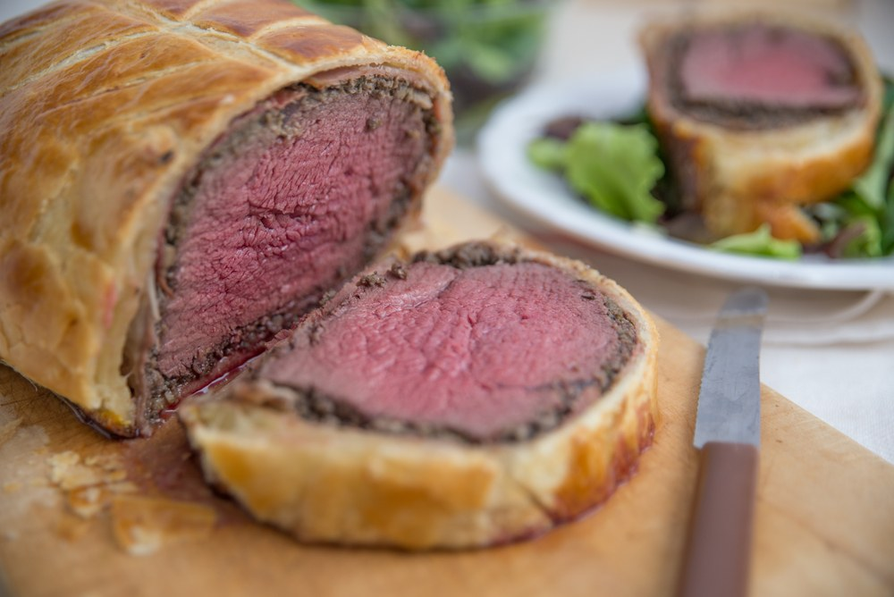
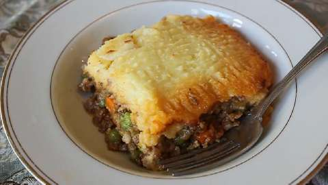
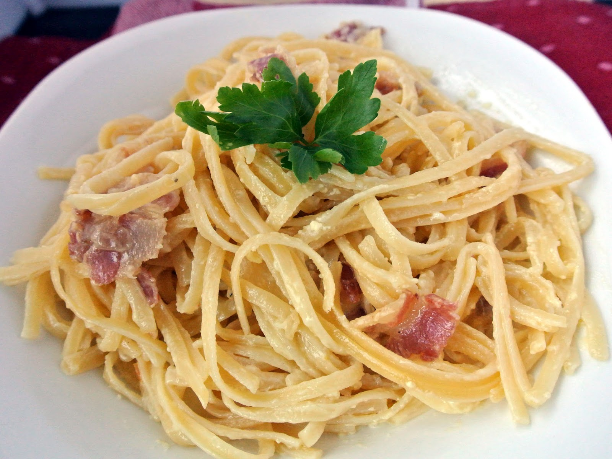
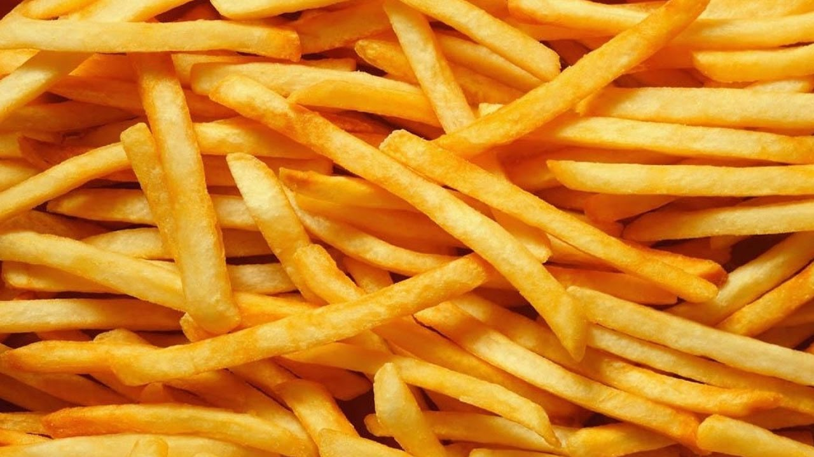

Recetas Faciles y Deliciosas
Cocinar nunca debe ser dificil, pero si delicioso
Favoritos:






Historial:
Las perfectas papas a la francesa
19 de mayo 2017

Las papas a la francesa son uno de esos platos que todos creen saber preparar, pero, a la hora de la verdad, casi nadie puede conseguir que tomar esa maravillosa corteza crocante manteniendo un interior suave y esponjoso. Hoy les traemos la receta perfecta para las papas a la francesa perfecta.
- El una olla de agua hiviendo con la suficiente cantidad de agua para cubrir las papas, las dejamos cocinar por no mas de cinco minutos.
- Una vez han pasado cinco minutos, sacamos las papas semi-cocidas y las dejamos enfriar a temperatura ambiente
- Precalentamos una olla con aceita vegetal o algun otro aceite sin sabor, a 180°C o 350°F.
- Una vez las papas esten frias, las metemos en el aceite precalentado y las dejamos terminar de cocer por otros siete minutos
Una vez esten listas, las sacamos del aceite, las dejamos enfriar un poco, agregamos sal al gusto y listas para comer!
Desayuno de campeones
19 de mayo 2017

No hay nada mejor que un buen desayuno un sabado por la mañana, por eso les traemos una idea para comer con café, jugo de naranja y el periodico. Tostada con huevos revueltos, champiñones y tomates cherry
- En un sarten de al menos 12 centimetros a fuego medio, verte una cucharrada de aceite. Luego poner los tomates, los champiñones y el pan a tostar. No olvides voltear el pan a mitad de camino.
- En un sarten para salsa, agregar 10g de mantequilla y ponlo a ocinar a fuego medio.
- Una vez se haya derretido la mantequilla, agregar dos huevo por porción.
- Mientras los heuvos se estan cociendo dentro del sartén para salsa, asegurate de siempre batirlos. Esto evitará que se quemen en la parte de abajo
- Una vez esten listos los huevos y con buena consistencia, quitalos del fuego y agrega sal al gusto y una pizca de tomillo seco.
- Quitar el sartén con los champiñones, los tomates y el pan del fuego.